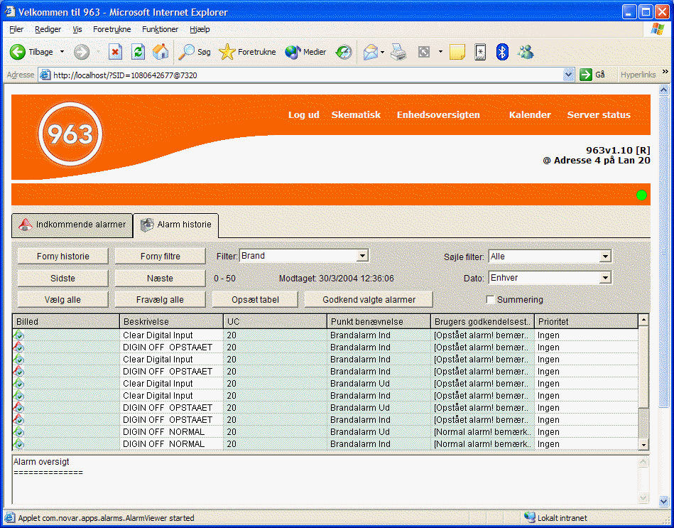

Ikon
Beskrivelse

Den opståede alarm er ikke blevet godkendt.

Den opståede alarm er blevet godkendt.

Den normale alarm er ikke blevet godkendt.

Den normale alarm er blevet godkendt.
Alarmoversigten vises på 963-Serverens Startside, hvis man er autoriseret til at se alarmer. Den viser de modtagne alarmer. Disse alarmer kan sorteres efter type for at formindske mængden af vist data.

Alarmoversigten har to dele:
Farver bruges til at vise, om en alarm er opstået eller normal. En rød klokke betyder en opstået alarm, og en grøn klokke betyder en normal alarm. Hvis alarmen er godkendt af brugeren, vil klokken fremkomme med en afkrydsning over den. Denne tabel viser de forskellige ikoner.
|
Ikon |
Beskrivelse |
|
|
Den opståede alarm er ikke blevet godkendt. |
|
|
Den opståede alarm er blevet godkendt. |
|
|
Den normale alarm er ikke blevet godkendt. |
|
|
Den normale alarm er blevet godkendt. |
Alarmhistorikken er farvekodet for at vise, om alarmen er igangværende. Rødt betyder, at alarmen er aktuel, og grønt betyder, at alarmen er normal.
Alarmhistorikken gemmer alle alarmerne, efter de er blevet behandlet. Denne liste gemmer alle behandlede alarmer i databasen, ligemeget om de er blevet godkendt af brugeren eller ej. Alarmerne kan ses i kronologisk rækkefølge eller som en sammenfattet oversigt.
Sammenfattet oversigt - Giver en total for hver alarmtype.
Kronologisk rækkefølge - En systematisk alarmhistorik sorteret i tidsorden.
Indkommende Alarmer består af de sidste 100 modtagne alarmer i ankomstrækkefølge. Nye alarmer fremkommer øverst på listen, efter de er blevet modtaget.